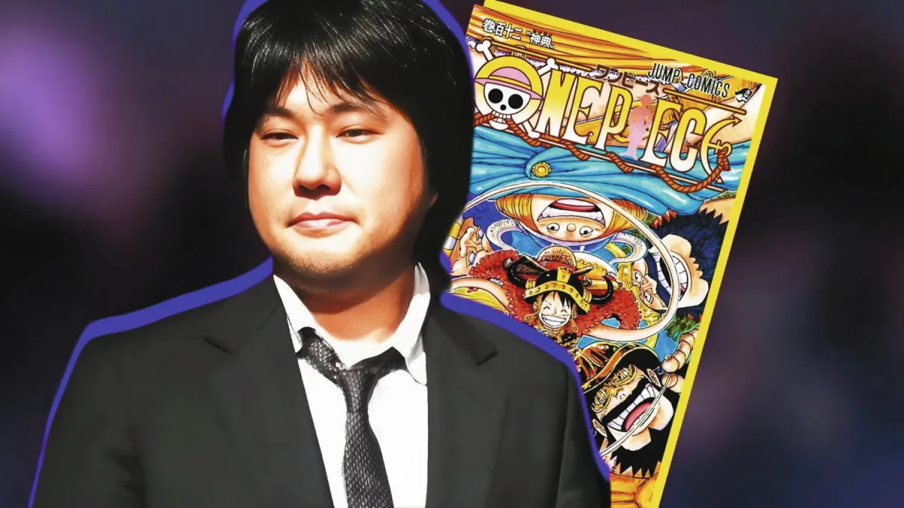
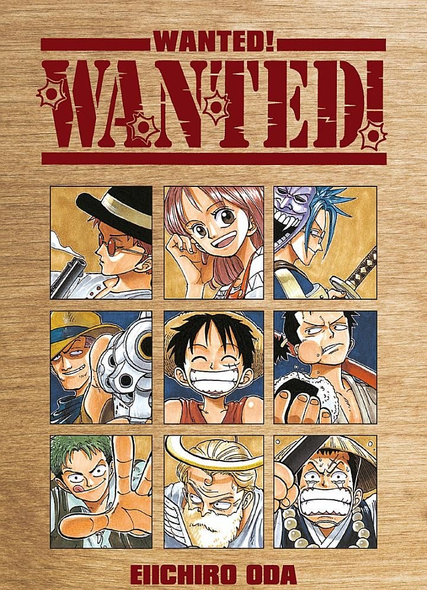
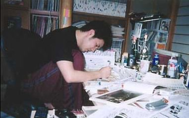

Tuổi thơ và giấc mơ trở thành mangaka
Eiichiro Oda sinh ngày 1/1/1975 tại Kumamoto, Nhật Bản. Từ khi còn nhỏ, Oda đã yêu thích truyện tranh và đặc biệt bị thu hút bởi hình tượng hải tặc. Niềm yêu thích này sau đó trở thành một trong những nguồn cảm hứng quan trọng cho One Piece.
Ngay từ những năm trung học, Oda đã bắt đầu gửi tác phẩm đến các cuộc thi dành cho họa sĩ trẻ. Năm 1992, khi mới 17 tuổi, ông gây chú ý với manga ngắn Wanted!. Tác phẩm giúp Oda giành giải tại Tezuka Award và mở ra cơ hội bước chân vào ngành công nghiệp manga.

Một năm sau, ông tiếp tục nhận giải Hop☆Step Award với Ikki Yako. Những thành công ban đầu giúp Oda được các biên tập viên của Shueisha chú ý.
Những năm tháng làm trợ lý
Trước khi trở thành tác giả độc lập, Oda từng làm trợ lý cho một số mangaka nổi tiếng. Đây là giai đoạn ông học hỏi trực tiếp về quy trình sản xuất manga chuyên nghiệp.
Kinh nghiệm làm trợ lý giúp Oda hiểu rõ cách xây dựng bố cục, thiết kế nhân vật, tạo chuyển động và đặc biệt là cách duy trì một câu chuyện dài kỳ.
Trong thời gian này, ý tưởng về một bộ truyện phiêu lưu xoay quanh hải tặc dần hình thành. Oda từng thực hiện những tác phẩm ngắn liên quan đến ý tưởng này trước khi phát triển thành One Piece.

Là người nghiện công việc
Oda nổi tiếng là người nghiện công việc và ít khi nghỉ ngơi trong gần 30 năm qua. Ông luôn vẽ mới mọi khung hình, không bao giờ sao chép lại và tự vẽ hầu hết các nhân vật, có rất ít trợ lý.
Ông có lịch làm việc "điên rồ". Khoảng thời gian nghỉ duy nhất dành cho ăn, ngủ và đi vệ sinh. Một ngày điển hình của Oda: dậy lúc 5h sáng, làm việc cả ngày, đi ngủ lúc 2h sáng hôm sau.
Lịch trong tuần sẽ như sau: Thứ hai tới thứ tư: Lập bố cục và hội thoại nhân vật; Thứ năm tới thứ bảy: Vẽ; Chủ nhật: Tô màu và các nhiệm vụ khác.
One Piece chính thức ra đời
Năm 1997, One Piece bắt đầu được đăng dài kỳ trên Weekly Shōnen Jump. Câu chuyện xoay quanh Monkey D. Luffy và hành trình trở thành Vua Hải Tặc.

Điểm đặc biệt của tác phẩm nằm ở quy mô thế giới. Oda không chỉ kể câu chuyện về một nhóm hải tặc mà còn xây dựng cả hệ thống chính quyền, hải quân, các băng hải tặc, chủng tộc, nền văn hóa và lịch sử của nhiều vùng đất.
Một trong những đặc điểm nổi bật trong cách viết của Oda là khả năng cài đặt chi tiết. Những thông tin tưởng như không quan trọng ở một chương có thể trở thành chìa khóa cho một sự kiện xảy ra hàng trăm chương sau.
Phong cách sáng tác
Oda nổi tiếng với cách kết hợp phiêu lưu, hài hước, hành động và cảm xúc. Nhân vật của ông thường có ngoại hình đặc biệt nhưng vẫn sở hữu những câu chuyện cá nhân rõ ràng.
Các thành viên băng Mũ Rơm đều có ước mơ và quá khứ riêng. Vì vậy, hành trình của họ không chỉ là cuộc phiêu lưu tìm kho báu mà còn là hành trình theo đuổi tự do và vượt qua những tổn thương trong quá khứ.

Thành tựu và giải thưởng
One Piece đã trở thành một trong những manga thành công nhất lịch sử. Năm 2012, tác phẩm giành Giải thưởng Lớn của Japan Cartoonists Association Award. Năm 2006, One Piece được lựa chọn trong 100 tác phẩm manga của Japan Media Arts Festival.
Năm 2015, One Piece được Guinness World Records ghi nhận với kỷ lục về số bản được xuất bản của một series truyện tranh do một tác giả duy nhất thực hiện. Kỷ lục này tiếp tục được xác nhận trong những năm sau đó.
Theo Shueisha Manga-Art Heritage, đến tháng 3/2026, One Piece đã vượt mốc 600 triệu bản phát hành trên toàn thế giới.
Di sản của Eiichiro Oda
Từ một cậu bé yêu thích truyện tranh, Oda đã trở thành một trong những mangaka có ảnh hưởng nhất của thời đại. One Piece không chỉ là một bộ manga mà còn trở thành thương hiệu toàn cầu với anime, phim điện ảnh, trò chơi và nhiều sản phẩm chuyển thể.
Điều đáng chú ý nhất trong sự nghiệp của Oda có lẽ không nằm ở một giải thưởng cụ thể, mà ở khả năng duy trì một thế giới truyện tranh thống nhất trong nhiều thập kỷ.